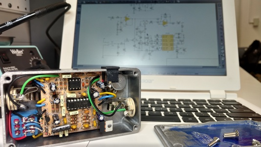
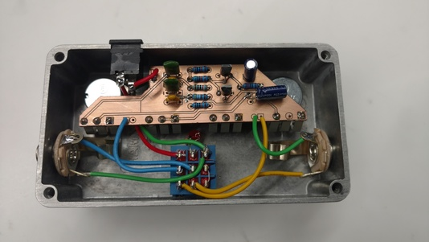
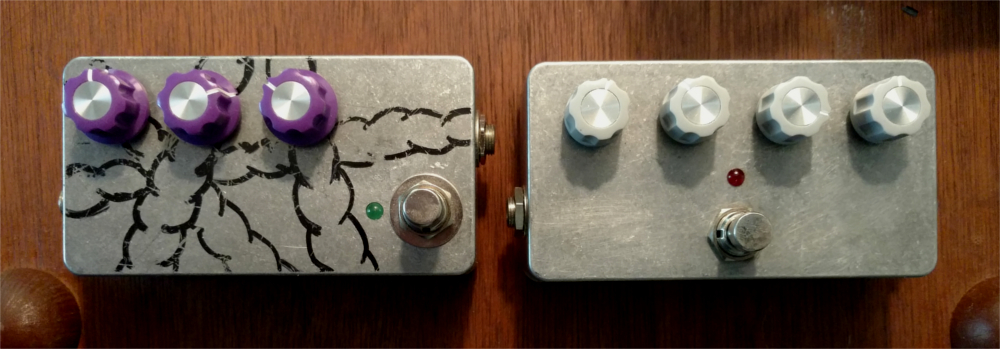

During times when I was tired of working on my class D amp, I turned my attention to some smaller audio electronics I'd been hoping to build for a while. Here are two guitar effects pedals I built over my last semester of school.
PT2399-based Delay Pedal
 The first high quality pedal I built is this delay pedal based on the PT2399 digital delay IC. It was actually tough to fit this circuit into a Hammond 1590bb enclosure, but I was able to make a double sided PCB with the milling machine in the Cornell Maker Lab. I think I was the first person to actually make a double sided one on that machine. This tight fit was good to practice keeping lots of details in my head all at once, making sure I was confident in my measurements and designed the PCB and drilled the holes in the proper location so all the parts would fit.
Wooly Mammoth Fuzz Clone
 I built this clone of the Zvex Wooly Mammoth Fuzz pedal. This one was really fun to make because it's super simple, there are only nine components! I was able to mount all four of the pots onto the PCB, which makes for a super sleek looking finished build. The electronics for this pedal probably cost less than $5, and it's probably less than $20 with the enclosure and foot switch too. But Zvex sells them for almost $400! The hand-painted art on his pedals is really cool though, but I also like my raw aluminum finish. :)Here is a photo of the finished units.
